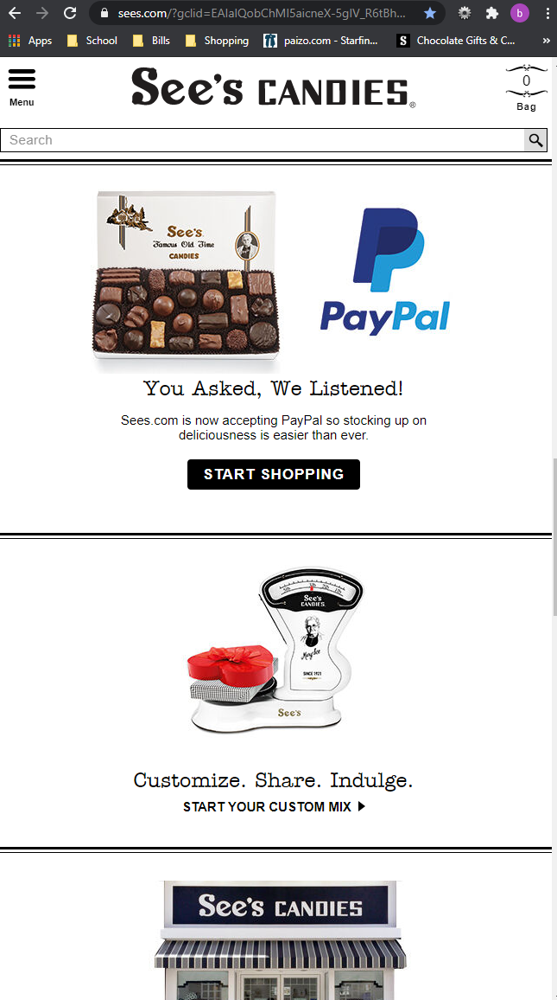
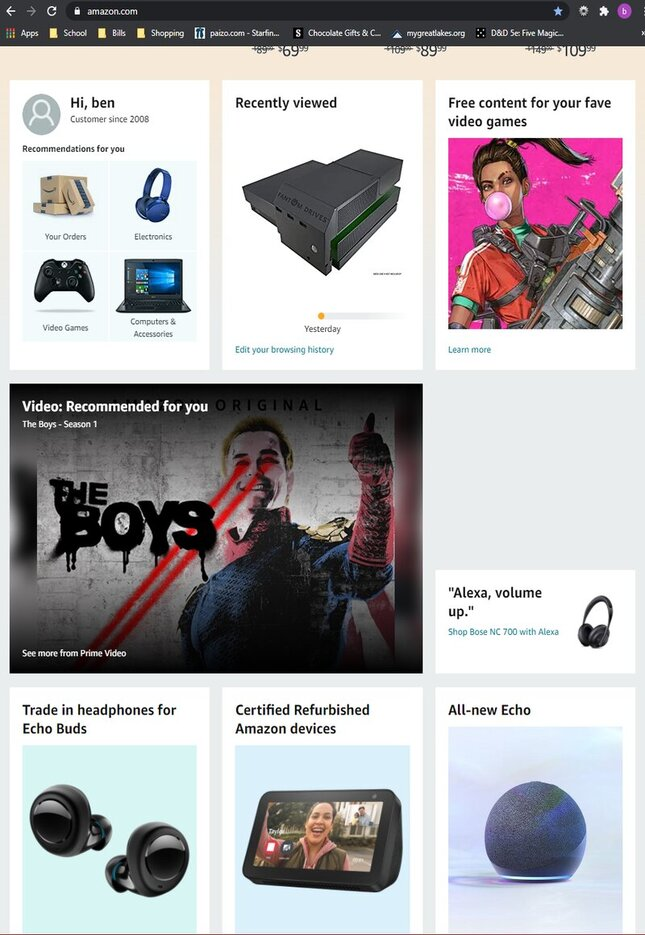

Benjamin Vredenburg
Lesson 2: Design Principles
Alignment
Steam uses the alignment principle rather effectively in multiple areas of their page. In this example you can see all titles are aligned perfectly to the left while the prices are perfectly aligned together to the right. They have also aligned the sale markers together to make them easily visible and training their customers to always know where to look for the sale marker.
White Space and Clean Design
See's Candies makes great use of white space and clean design principles. As you can see in the example, most of their blocks are white with the minimal amount of text necessary to tell the customer what their options are and a supporting image that matches the information.
Proximity
Although there are many, many options to choose from on Amazon, their "recommendations for you" section truly exemplifies Amazon's grasp of the proximity principle. Here, they keep track of purchases and views you've made on their website and curate helpful links for you in a box that is top-left aligned on the page which is (in English) our natural state of reading.